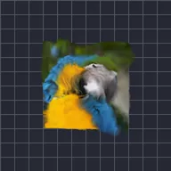

Làm mờ biến dạng

Kéo nhòe lớp theo nhiễu fractal mượt, nên mỗi điểm tạo một vệt có độ dài và hướng khác nhau. Hướng chọn chiều chạy của các vệt, Một trục giữ chúng chỉ theo chiều đó, và Độ lệch đẩy mọi vệt về cùng một phía.
Cài đặt
| Cài đặt | Loại | Phạm vi | Mặc định |
|---|---|---|---|
| Thị sai | Điểm (X, Y) | -5000 px đến 5000 px | 0 px, 0 px |
| Độ lệch | Điểm (X, Y) | -5000 px đến 5000 px | 0 px, 0 px |
| Độ mạnh | Số | 0 đến 2 | 0.25 |
| Tiến trình | Số | -50 đến 50 | 0 |
| Hướng | Lựa chọn | Ngang, Dọc, Cả hai, Hướng tâm, Xoắn ốc, Xoắn | Xoắn ốc |
| Tỷ lệ | Số | 0.01 đến 50 | 1 |
| Kéo giãn | Điểm (X, Y) | 0.01 đến 10 | 1, 1 |
| Hạt giống | Số | 0 đến 5 | 0 |
| Một trục | Bật hoặc tắt | – | Bật |
| Không gian màn hình | Bật hoặc tắt | – | Tắt |
| Số bậc | Số | 1 đến 9 | 6 |
| Độ thiên lệch | Số | -1 đến 1 | 0 |